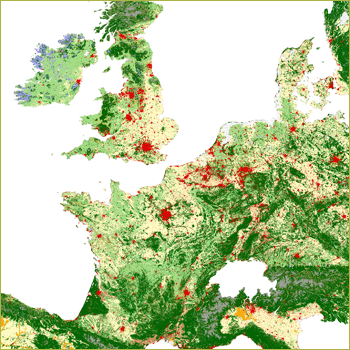

model is used to translate the aggregate land use change at the national level to high-resolution patterns (1x1 km) of land use change for the 25 countries of the European Union. In this study the Conversion of Land Use and its Effects model (CLUE-s version 2.4) is used. The CLUE-s model is based on the dynamic simulation of competition between land uses while the spatial allocation rules can be specified based on either an empirical analysis, user-specified decision rules, neighborhood characteristics (similar to cellular automata models) or a combination of these methods. |
 |
The actual allocation is based on a set of constraints and preferences that reflect the characteristics of the land use type, location and the assumed processes and constraints relevant to the scenario. Differences between scenarios are obtained by differences in data inputs and parameter settings that affect the behaviour of the model. The approach considers eight different land use types: dry land arable agriculture, irrigated agriculture, grassland, abandoned agricultural land, built-up area, natural vegetation types including production forest (also coniferous plantations), inland wetlands and a class of miscellaneous land use types which are assumed to show little dynamics in time (including beaches, glaciers and bare rock).
The land requirements for the different land use types determine the actual area that is allocated by the model (Figure 2). These demands are specified for each country separately. Changes in agricultural land areas are based on the results of the combined simulations with the global economic (GTAP) and integrated assessment model (IMAGE) as described above. Growth in built-up area is calculated proportional to changes in population, GDP (as a proxy for changes in household structure and space requirements for residential and recreational purposes) and the growth in the industrial/services sectors calculated by the GTAP model. Changes in natural area are restricted by the scenario specific protection of nature reserves and, otherwise, follow land availability after accounting for changes in agricultural and built-up area. If land is available, nature development can occur spontaneous as result of re-growth of natural vegetation on abandoned lands or more directly through active management of former agricultural areas to develop natural vegetation.
Whereas the demand for land by the different land use types determines the
overall competitive capacity of the different land use types, the location suitability
is a major determinant of the competitive capacity of the different land use
types at a specific location. A wide range of local and regional factors can
influence the suitability of a location for a land use type. Besides the commonly
considered biophysical suitability in terms of crop growth potential, other
factors, such as accessibility or neighborhood characteristics, should be considered
as factors influencing the location suitability as perceived by the decision
maker. The location suitability is a weighted average of the suitability based
on empirical analysis capturing the historic and current location preferences
in response to location characteristics, the influence of neighboring land uses
on location suitability (e.g., in case of agglomeration effects) and suitabilities
based on scenario specific decision rules. It is assumed that in the different
scenarios the decision makers may have a different perception of location suitability
as result of changes in worldview, policy incentives and extension. As an example,
in the Global Economy (A1) scenario it is assumed that potential crop
productivity may be a more important factor determining location suitability
than in other scenarios. Empirical analysis is used to capture the current and
historic preferences for locations based on a logistic regression relating land
use patterns to a wide range of potential factors that are expected to determine
the location suitability. The location characteristics included in this analysis
include, among others, accessibility, soil and geomorphology, climate, population
density and altitude. For each country the analysis was conducted separately
to allow region dependent factors to be included. The empirical relations capture
the current structure of land use and the response to changes in dynamic location
factors (such as population), but do not allow for changes in spatial behavior
as assumed in the different scenarios or the impacts of region specific policies.
The latter is accounted for by the specification of area-specific conditions
while changes in behavior are dealt with by adapting the calculated suitability
with decision rules that reflect the assumed changes in location preferences.
These include the different preferences for new built-up land and urbanization
policies.
In addition to the land requirements and location suitabilities the model accounts
for land use type specific characteristics that influence the conversion and
cause differences in spatio-temporal behavior. Whilst urban growth in almost
all cases results in a one-way conversion of other land uses into built-up land,
arable land can still increase in a region while the region overall faces a
decrease of agricultural land. Therefore each land use type is characterized
in the model by a conversion elasticity and a specification of all plausible
conversions.
Finally, for each of the scenarios, several region specific spatial policies were defined and implemented in the model. Some of these policies are implemented as a restriction on all conversions in the specified area (e.g., nature reserves) or as a restriction on specific conversions. Other spatial policies are implemented as an increase in the location suitability for one or more of the land use types in the specific area; e.g., support for farmers in less favoured areas (LFA's) is implemented as an increase in location suitability relative to similar locations outside the LFA's.